🧬 MicroBioMeta es un paquete de R diseñado para trabajar con datos de metabarcoding. Este tutorial recorre un ejemplo de su uso.
Para este ejemplo usaremos datos secuenciados con el barcode 16S para bacterias y 18S para hongos.
Los datos provienen de:
💻 Cargar los datos
Primero, carguemos el paquete MicroBioMeta:
Carguemos también los demás paquetes que vamos a necesitar:
tidyverse se usa
para todo el manejo de datos y las visualizaciones.
Ahora cargamos los datos y los reformateamos. Este conjunto de datos
fue procesado en QIIME2
(Bolyen et al. 2019), así que sus
artefactos .qza se importaron originalmente a R con el
paquete qiime2R (Bisanz
2018) (Licencia MIT, © 2018 Jordan Bisanz), del cual
read_qza() el parser de taxonomía propio de
MicroBioMeta está adaptado. Si tienes tus propios
artefactos .qza, qiime2R::read_qza()
(devtools::install_github("jbisanz/qiime2R")) es la forma
de importarlos a R.
Para esta viñeta, esos mismos datos vienen incluidos en el paquete ya
exportados como archivos .txt planos (en
inst/extdata/), así que construirla no requiere tener
instalado qiime2R (un paquete que solo está en GitHub):
Primero, carguemos las tablas y la taxonomía de cada conjunto de datos:
bacteria_table <- read.delim(
system.file("extdata", "table_bacteria.txt", package = "MicroBioMeta"),
row.names = 1, check.names = FALSE
)
fungi_table <- read.delim(
system.file("extdata", "table_fungi.txt", package = "MicroBioMeta"),
row.names = 1, check.names = FALSE
)
taxonomy_bacteria <- read.delim(
system.file("extdata", "taxonomy_bacteria.txt", package = "MicroBioMeta"),
check.names = FALSE
) %>%
rename(taxonomy = Taxon) %>%
dplyr::select(-Confidence) %>%
column_to_rownames(var = "Feature.ID")
taxonomy_fungi <- read.delim(
system.file("extdata", "taxonomy_fungi.txt", package = "MicroBioMeta"),
check.names = FALSE
) %>%
rename(taxonomy = Taxon) %>%
dplyr::select(-Consensus) %>%
column_to_rownames(var = "Feature.ID")⚠️ Nota que renombramos la columna Taxon a taxonomy antes de unir estos dos objetos:
colnames(taxonomy_bacteria)## [1] "taxonomy"Ahora, carguemos los metadatos de cada conjunto de datos:
bacteria_metadata <- read.delim(
system.file("extdata", "metadata_bacterias.txt", package = "MicroBioMeta"),
check.names = FALSE
) %>%
filter(Month == "2")
fungi_metadata <- read.delim(
system.file("extdata", "metadata_fungis.txt", package = "MicroBioMeta"),
check.names = FALSE
)Ahora filtremos y ordenemos los datos. Es una buena práctica usar tabla y metadatos que contengan la misma información y muestras, y en el mismo orden. Así que en este punto vamos a filtrar las tablas para que coincidan con los metadatos.
Para bacterias:
samples_bac <- bacteria_metadata$SAMPLEID[
bacteria_metadata$SAMPLEID %in% colnames(bacteria_table)]
table_bacteria <- bacteria_table[, samples_bac]
metadata_bacteria <- bacteria_metadata[
bacteria_metadata$SAMPLEID %in% samples_bac, ]y para hongos:
Preprocesamiento de los datos
Las funciones de MicroBioMeta necesitan que los datos
estén en formato biom, con una columna de
taxonomía al final.
Si tus datos no vienen ya en ese formato,
merge_feature_taxonomy() combina una tabla de abundancia y
una tabla de taxonomía en este formato. Mantener la taxonomía como una
columna de la misma tabla permite que la mayoría de las funciones
consulten la identidad taxonómica sin necesitar un objeto aparte.
table_bac <- merge_feature_taxonomy(table = table_bacteria,
taxonomy = taxonomy_bacteria)## Warning in merge_feature_taxonomy(table = table_bacteria, taxonomy =
## taxonomy_bacteria): 83 taxonomy IDs are not present in the table and will be
## excluded from the result.
table_fung <- merge_feature_taxonomy(table = table_fungi,
taxonomy = taxonomy_fungi)## Warning in merge_feature_taxonomy(table = table_fungi, taxonomy =
## taxonomy_fungi): 17 taxonomy IDs are not present in the table and will be
## excluded from the result.⚠️ Nota que esta advertencia reporta cuántos IDs de taxonomía no coincidieron con la tabla de features y fueron excluidos del resultado.
📊 Exploración de la composición
MicroBioMeta tiene varias funciones para explorar la
composición, identidad taxonómica y abundancia. Exploremos cada una.
📊 Barplots de abundancia
Los barplots de abundancia son útiles para identificar patrones en la
composición de la comunidad según la identidad taxonómica.
Esta función genera barplots apilados de abundancias relativas usando
una tabla de abundancia y un archivo de metadatos como entrada.
El parámetro taxonomy_db especifica la base de datos
taxonómica de referencia usada para la asignación taxonómica (por
ejemplo, SILVA, GTDB, UNITE).
El parámetro x_col indica la columna de los metadatos usada
para agrupar muestras en el eje x, mientras que facet_by
define la columna de metadatos usada para dividir el gráfico en
facetas.
El parámetro level permite elegir el nivel taxonómico al
que se colapsan los datos.
top_n_groups controla el número de taxones más
abundantes que se muestran en el barplot.
Si add_remain = TRUE, las abundancias relativas se
completan hasta el 100% agregando una categoría gris que representa los
taxones restantes no mostrados explícitamente; si es FALSE,
solo se muestran los taxones seleccionados.
El parámetro label define el título de la leyenda mostrada
en el gráfico.
Las etiquetas del eje x pueden rotarse con x_label_angle
(por defecto 0, horizontal), útil cuando los nombres de
muestras o grupos son lo suficientemente largos como para superponerse,
como en los ejemplos de abajo. strip_text_bold controla si
los títulos de las facetas van en negritas (por defecto
FALSE), y aspect_ratio fija la relación
alto/ancho del panel cuando necesitas proporciones consistentes entre
figuras.
Finalmente, cuando save_table = TRUE, la función también
retorna una tabla con las abundancias relativas (porcentajes) usadas
para generar el gráfico.
abundance_bar_plot(table = table_bac,
metadata = metadata_bacteria,
taxonomy_db = "silva",
level = "phylum",
top_n = 15,
x_col = "Type_of_soil",
facet_by = "Treatment",
add_remained = TRUE,
label = "Phylum",
x_label_angle = 45,
save_table = FALSE)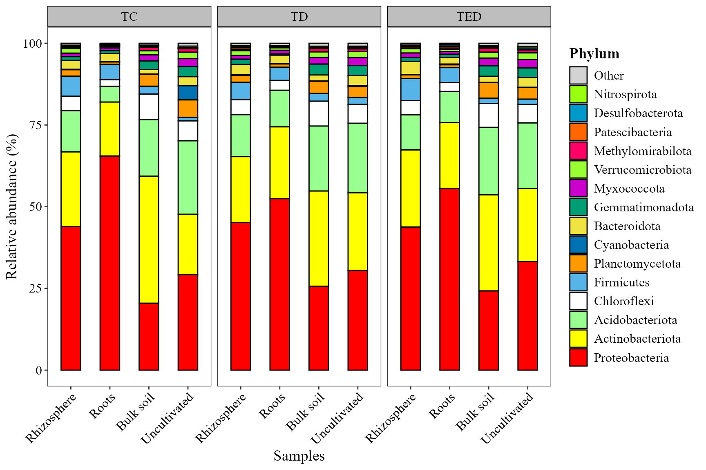
abundance_bar_plot(table = table_fung,
metadata = metadata_fungi,
x_col = "Treatment",
facet_by = "Type_of_soil",
add_remained = TRUE,
label = "Genera",
x_label_angle = 45,
save_table = FALSE)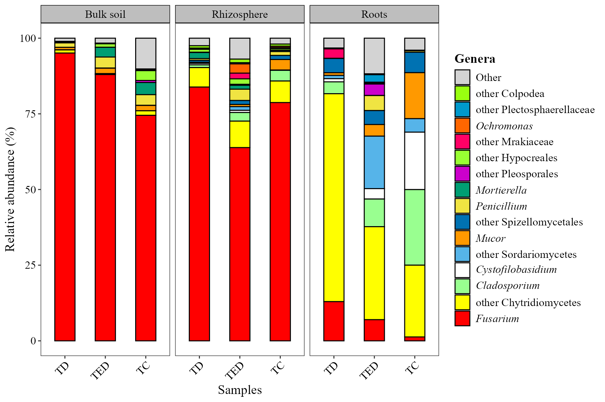
🖥️ Heatmaps de abundancia
Nota que los archivos de entrada son los mismos que en la función anterior, y esto es consistente en todas las funciones de aquí en adelante.
Los parámetros condition1, condition2 y
condition3 definen las tres variables de metadatos que se
muestran como anotaciones horizontales encima del heatmap.
Se pueden especificar paletas de color personalizadas para cada
anotación con colors_condition1,
colors_condition2 y colors_condition3,
respectivamente.
Los títulos de leyenda de estas anotaciones se pueden personalizar con
name_legend_condition1, name_legend_condition2
y name_legend_condition3.
El argumento top_n controla el número de features más
abundantes incluidos en el heatmap.
Si cluster = TRUE, las filas se agrupan jerárquicamente; si
es FALSE, los features se ordenan por abundancia relativa
decreciente.
El parámetro show_column_names determina si se muestran los
nombres de las muestras en el heatmap.
Las etiquetas de fila por defecto son solo el número de rango del
feature ("1", "2"…);
feature_prefix antepone lo que corresponda a los datos —
aquí "ASV", ya que los features de esta tabla son variantes
de secuencia de amplicón (ASV) de QIIME2/DADA2.
Los nombres compuestos de SILVA de tres o más géneros se acortan al
último género más “group” (por ejemplo,
Allorhizobium-Neorhizobium-Pararhizobium-Rhizobium se muestra
como “Rhizobium group”; los de dos géneros, como
Escherichia-Shigella, se dejan completos), aquí y en los
barplots, diagramas de Sankey y figuras de ALDEx2. Las demás etiquetas
de más de max_label_length caracteres (por defecto
35) se cortan con “…”. Usa
composite_names = FALSE para ver los nombres completos.
Los tipos de suelo conservan los colores Okabe-Ito que el paquete usa por defecto (aptos para daltonismo: Bulk soil naranja, Rhizosphere azul, Roots verde, Uncultivated amarillo). Para los tratamientos usamos colores de la paleta “Safe” (también apta para daltonismo), así las dos variables no comparten colores:
treatment_colors <- c(TC = "#CC6677", TD = "#332288", TED = "#999933")
abundance_heatmap_plot(table = table_bac,
metadata = metadata_bacteria,
top_n = 20,
show_column_names = FALSE,
condition1 = "Type_of_soil",
condition2 = "Treatment",
colors_condition2 = treatment_colors,
feature_prefix = "ASV")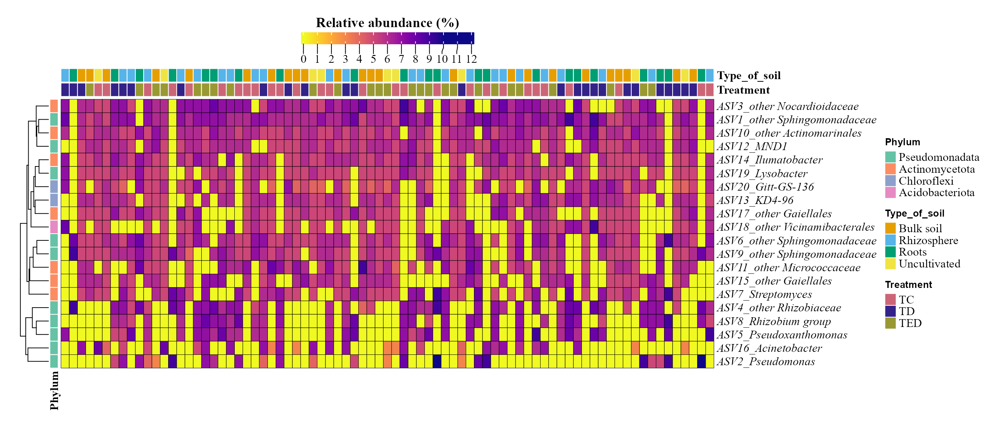
abundance_heatmap_plot(table = table_fung,
metadata = metadata_fungi,
top_n = 20,
show_column_names = FALSE,
condition1 = "Type_of_soil",
condition2 = "Treatment",
colors_condition2 = treatment_colors,
feature_prefix = "ASV")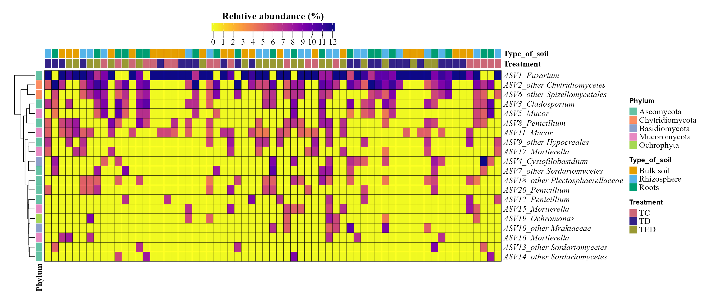
🖥️ Diagrama de Sankey del flujo taxonómico
abundance_sankey_plot() visualiza cómo fluye la
abundancia relativa a través de los rangos taxonómicos: de Reino a
Especie, como un diagrama de Sankey interactivo. Es útil para tener una
visión rápida de qué linajes dominan la comunidad.
El argumento taxRanks especifica qué rangos incluir como
nodos, maxn limita el número de taxones conservados por
rango, y taxonomy_db le indica a la función cómo están
formateadas las cadenas de taxonomía (por ejemplo, "silva",
"gg", "kraken2"). Esta función depende de networkD3,
disponible en CRAN:
install.packages("networkD3")⚠️ A diferencia de las demás funciones, esta no retorna un objeto
ggplot sino un objeto interactivo
sankeyNetwork (htmlwidget). Por defecto no escribe nada en
disco; usa output_file (por ejemplo,
output_file = "sankey_bacteria.html") para guardar
el diagrama como archivo HTML.
sankey_bacteria <- abundance_sankey_plot(
table = table_bac,
maxn = 10,
width = 950,
height = 650,
taxRanks = c("P", "C", "O", "F", "G"),
taxonomy_db = "silva"
)
sankey_bacteria📊 Diversidad alfa
La diversidad alfa describe la diversidad dentro de cada muestra
individual. Con MicroBioMeta, la diversidad alfa se puede
explorar con varias métricas distintas, como métricas clásicas tipo Chao
y Simpson. Además, el paquete implementa funciones basadas en el
marco de números de Hill (Chao et al. 2014; Li 2018), que ofrece una forma
unificada de representar distintas unidades. Los números de Hill se
parametrizan mediante el orden q, que regula el peso que se le
da a la abundancia. Por ejemplo, q=0 corresponde a la riqueza
de especies (número total de especies), q=1 al exponencial de
la entropía de Shannon (especies frecuentes), y q=2 al inverso
del índice de Simpson (especies dominantes).
📈 Correlación entre números de Hill
La función alpha_hill_corr_plot() calcula los números de
Hill para distintos órdenes (típicamente, 𝑞=0,1,2) y visualiza las
correlaciones entre ellos mediante un gráfico de correlación, evaluando
qué tan fuertemente se relacionan las métricas de diversidad de
distintos órdenes con la profundidad de secuenciación.
Este es el primer paso antes de analizar las métricas de diversidad alfa.
Para las bacterias 🦠, podemos observar que en todos los órdenes de q hay una correlación fuerte con la profundidad de secuenciación. Cuando esto pasa, las diferencias de diversidad entre muestras pueden reflejar en parte diferencias en el esfuerzo de secuenciación, así que conviene tenerlo en cuenta (o rarefaccionar) antes de comparar grupos.
alpha_hill_corr_plot(table = table_bac)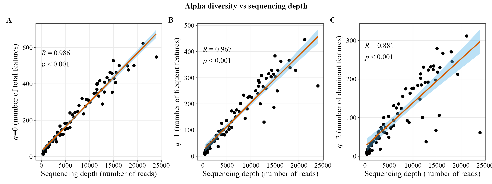
📊 Visualización de diversidad alfa
La función alpha_hill_plot() calcula los números de Hill
y visualiza los patrones de diversidad alfa entre condiciones
experimentales usando boxplots.
El parámetro x_col especifica la columna de metadatos
usada en el eje x, mientras que fill_col controla el
agrupamiento usado para colorear los boxplots.
El argumento facet_by permite dividir el gráfico según
una variable de metadatos, y facet_orientation controla si
las facetas se organizan horizontal o verticalmente.
Si save_table = TRUE, la función también retorna una
tabla con los valores de diversidad alfa calculados para cada
muestra.
alpha_hill_plot(table = table_bac,
metadata = metadata_bacteria,
x_col = "Treatment",
fill_col = "Treatment",
group_colors = treatment_colors,
facet_by = "Type_of_soil",
facet_orientation = "horizontal",
save_table = FALSE)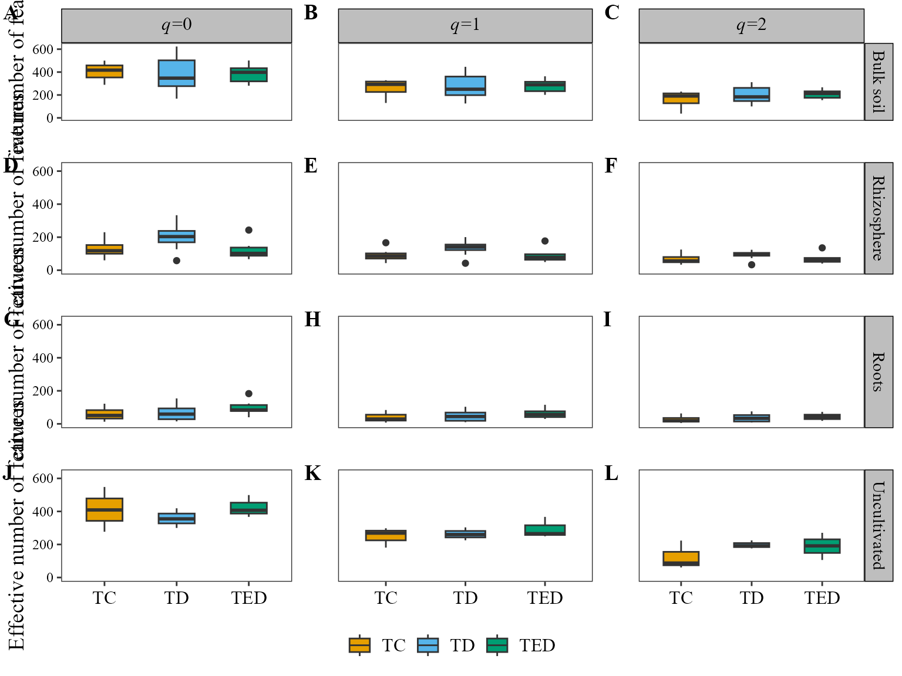
La misma función permite intercambiar el papel de las variables. Para los hongos 🍄 ponemos el compartimento de suelo en el eje x y separamos los paneles por tratamiento, lo que resalta cómo cambia la diversidad del suelo desnudo a las raíces dentro de cada tratamiento:
alpha_hill_plot(table = table_fung,
metadata = metadata_fungi,
x_col = "Type_of_soil",
fill_col = "Type_of_soil",
facet_by = "Treatment",
facet_orientation = "horizontal",
show_legend = FALSE,
save_table = FALSE)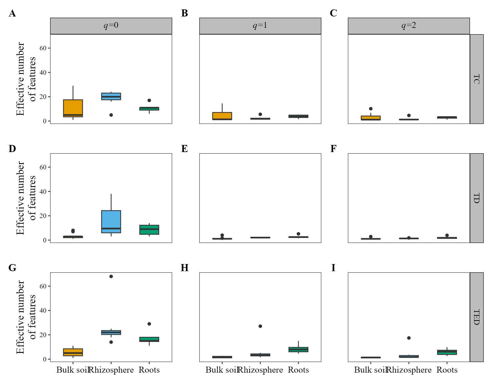
También podemos visualizar otras métricas considerando índices clásicos de diversidad alfa:
alpha_diversity_plot(table = table_fung,
metadata = metadata_fungi,
x_col = "Treatment",
fill_col = "Treatment",
group_colors = treatment_colors,
facet_by = "Type_of_soil",
facet_orientation = "horizontal",
stat = "anova",
free_y = TRUE,
save_table = FALSE)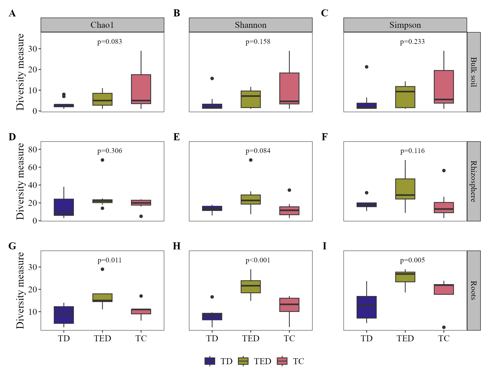
Cada panel se etiqueta automáticamente (A, B, C, …) para poder
referenciarlo. Cuando se establece stat, también se agregan
valores p a cada panel. "wilcox.test" o
"t.test" comparan cada par de grupos, cada uno con su
corchete, y corrigen los valores p por comparaciones múltiples dentro
del panel con p_adjust_method (por defecto
"holm"; "none" muestra los valores p sin
corregir). "kruskal.test" o "anova" dan un
solo valor p global por panel. Solo se dibujan las comparaciones
significativas. panel_label_case alterna entre etiquetas en
mayúsculas y minúsculas, panel_label_bold para etiquetas en
negritas, y panel_labels te permite dar etiquetas
personalizadas (por ejemplo c("(a)", "(b)", "(c)")) en vez
de las generadas automáticamente. free_y permite que cada
panel use su propia escala del eje y en vez de una compartida, como
abajo:
alpha_diversity_plot(table = table_fung,
metadata = metadata_fungi,
x_col = "Treatment",
fill_col = "Treatment",
group_colors = treatment_colors,
facet_by = "Type_of_soil",
facet_orientation = "horizontal",
stat = "anova",
free_y = TRUE,
x_label_angle = 45,
panel_label_bold = FALSE,
save_table = FALSE)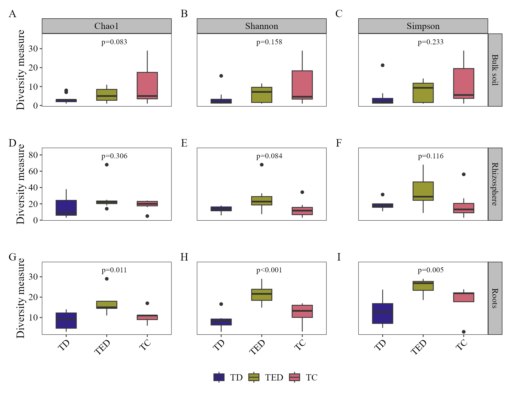
Con facet_orientation = "vertical" los órdenes de Hill
(q) van en filas y los grupos de facet_by en
columnas:
alpha_hill_plot(table = table_fung,
metadata = metadata_fungi,
x_col = "Type_of_soil",
fill_col = "Type_of_soil",
facet_by = "Treatment",
facet_orientation = "vertical",
show_legend = FALSE,
save_table = FALSE)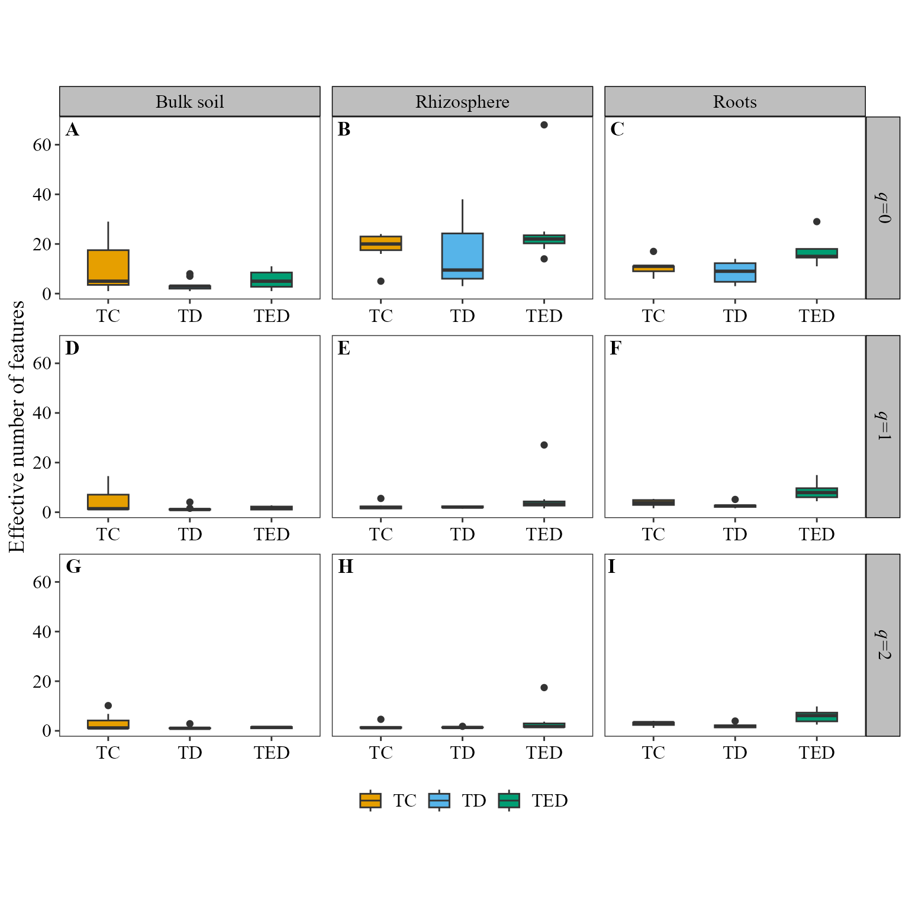
Diversidad alfa a lo largo de un gradiente continuo
alpha_decay_plot() hace una regresión de los números de
Hill contra una variable continua de los metadatos (por
ejemplo, pH, elevación, distancia). Cada orden de Hill (q=0, 1,
2) tiene su propio panel con una línea de regresión y una anotación con
el coeficiente de correlación (rho de Spearman por defecto), su valor p,
y cuando show_lm_stats = TRUE, la R² y la pendiente del
modelo lineal.
El parámetro cont_var nombra la columna continua de
metadatos a ubicar en el eje x, y el argumento opcional
group_col ajusta una línea de regresión separada por grupo
en vez de una sola línea global.
Aquí usamos el pH del suelo como gradiente, restringido
a Bulk soil y Rhizosphere para una comparación
más limpia:
metadata_bacteria_decay <- metadata_bacteria %>%
filter(Type_of_soil %in% c("Bulk soil", "Rhizosphere"))
alpha_decay_plot(table = table_bac,
metadata = metadata_bacteria_decay,
cont_var = "pH",
group_col = "Type_of_soil",
x_axis_title = "Soil pH")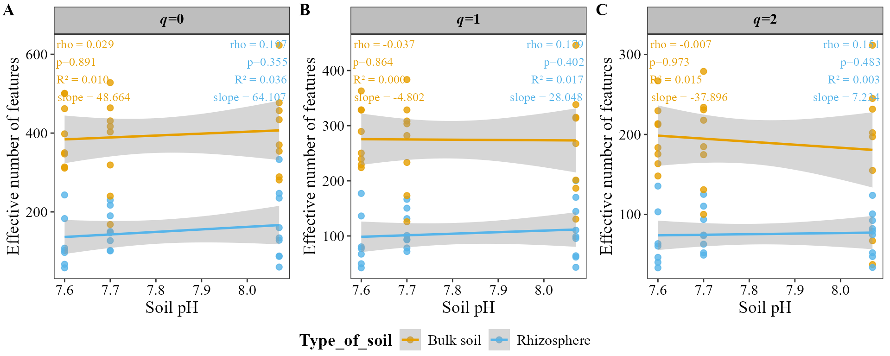
💻 Taxones compartidos entre grupos de muestras
Otra forma de explorar los patrones de diversidad alfa es examinando
qué taxones son compartidos o exclusivos entre grupos de
muestras. La función venn_plot() genera diagramas
de Venn que resumen el traslape de taxones entre los grupos definidos en
los metadatos.
Generamos un diagrama de Venn agrupando muestras según el tratamiento (TC, TD y TED).
venn_plot(table = table_fung,
metadata = metadata_fungi,
merge_by = "Treatment",
min_prevalence = 0 )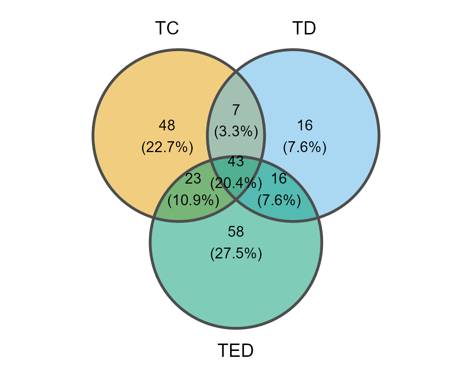
💻 Colapsar la tabla por nivel taxonómico
Las tablas de comunidades microbianas suelen generarse a nivel de ASV u OTU, lo que puede resultar en cientos o miles de features. Para la interpretación y visualización, suele ser útil agrupar estos features en un nivel taxonómico superior, como género.
La función collapse_table() realiza esta agregación
agrupando los features que están en el mismo nivel de taxonomía y
sumando sus conteos.
La función retorna una lista con dos elementos:
collapsed_table: una tabla de abundancia en formato ancho, donde las filas corresponden a los taxones colapsados en el nivel seleccionado y las columnas corresponden a las muestras.long_format: la misma información en formato largo, útil para graficación o análisis estadísticos posteriores.Por ejemplo, el siguiente código colapsa la tabla de abundancia de hongos al nivel de género y hacemos un diagrama de Venn para visualizar los géneros compartidos.
table_genus <- collapse_table(
table = table_fung,
metadata = metadata_fungi,
level = "genus"
)
venn_plot(
table = table_genus$collapsed_table,
metadata = metadata_fungi,
merge_by = "Treatment"
)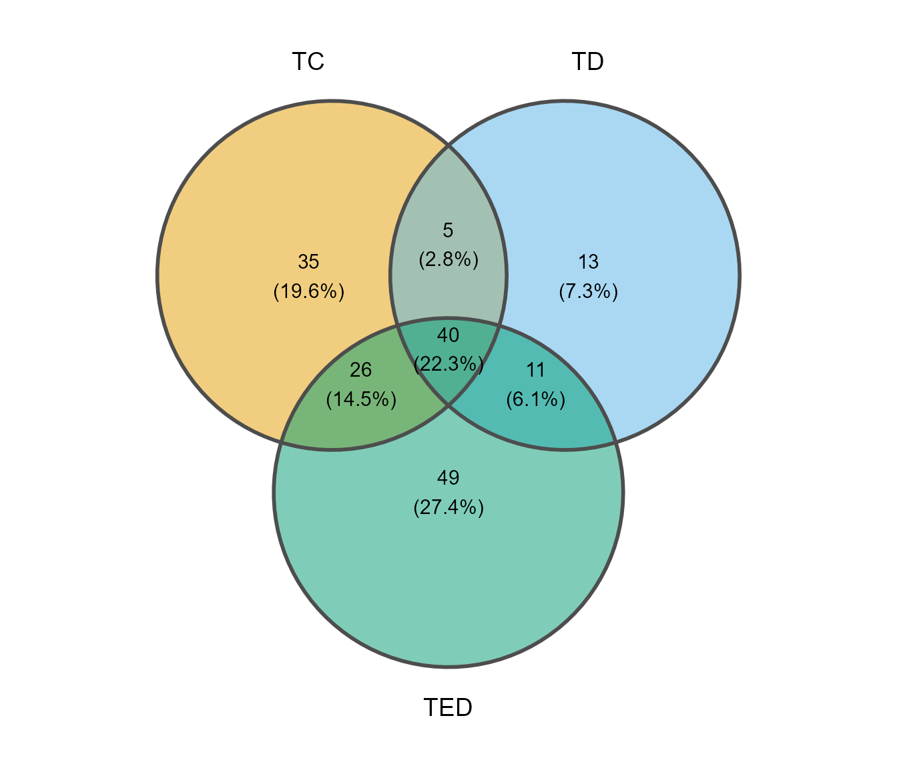
Por defecto, collapse_table() retorna los
conteos crudos sumados en el nivel taxonómico
seleccionado. Sin embargo, los datos de comunidades microbianas suelen
necesitar visualizarse o analizarse como abundancia
relativa. Al establecer rel_abun = TRUE, los
conteos de cada muestra se convierten en porcentajes,
donde la abundancia total por muestra suma 100%.
🖥️ Filtrar taxones por prevalencia
A veces es útil visualizar solo los taxones que ocurren
frecuentemente dentro de cada grupo. Esto se puede hacer usando el
parámetro min_prevalence.
Por ejemplo, el siguiente diagrama incluye solo los taxones presentes en al menos el 20% de las muestras dentro de cada grupo. El parámetro es 0 por defecto, lo que significa que no se aplica ningún filtro.
venn_plot(table = table_fung,
metadata = metadata_fungi,
merge_by = "Treatment",
min_prevalence = 0.2 )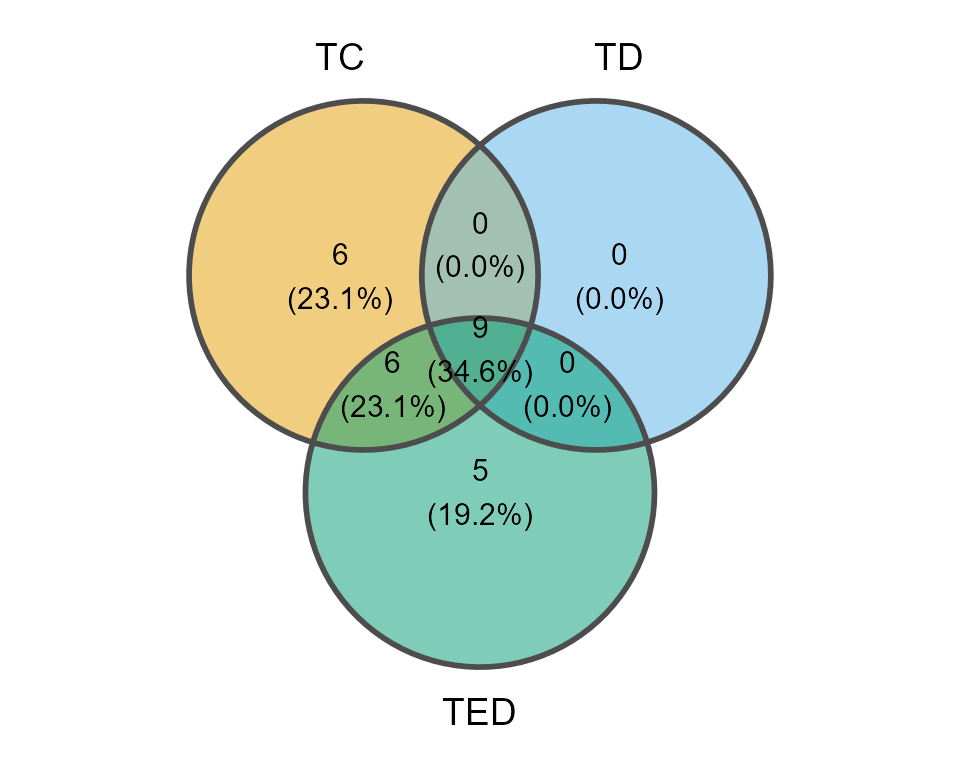
🖥️ Personalizar los colores de los grupos
La función también permite colores personalizados para los grupos.
venn_plot(table = table_fung,
metadata = metadata_fungi,
merge_by = "Treatment",
min_prevalence = 0,
group_colors = treatment_colors )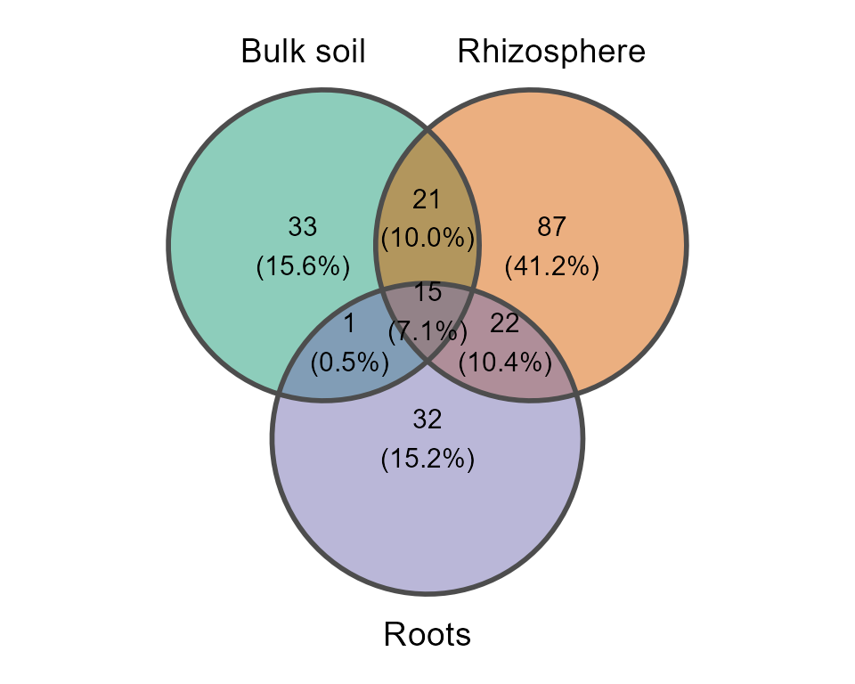
🖥️ Método de graficación alternativo
Por defecto la función usa el paquete ggvenn, pero también puede generar el diagrama usando ggVennDiagram.
venn_plot(table = table_fung,
metadata = metadata_fungi,
merge_by = "Treatment",
method = "ggvenndiagram" )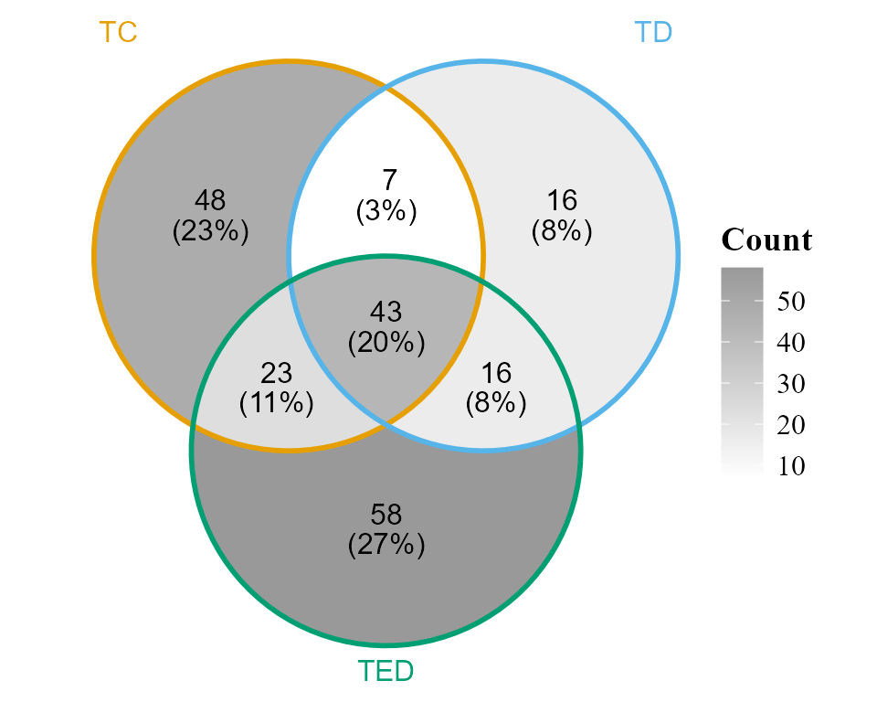
💻 Diversidad beta
La diversidad beta describe las diferencias en la composición y estructura de la comunidad entre muestras. Estos análisis ayudan a determinar si las comunidades microbianas varían según las condiciones ambientales, los tratamientos o los grupos experimentales, y cómo se agrupan o se separan.
MicroBioMeta tiene varias funciones para explorar la
diversidad beta, incluyendo gráficos de ordenación, pruebas estadísticas
de diferencias entre comunidades, y enfoques de partición que separan
los componentes compartidos y exclusivos de la diversidad. Estas
funciones permiten tanto la exploración visual como pruebas de hipótesis
formales.
🖥️ Ordenación de la composición de la comunidad
La función beta_ord_plot() calcula las disimilitudes
pareadas entre muestras y visualiza los resultados usando un método de
ordenación. Por defecto, la función usa métricas de distancia ecológicas
comunes (por ejemplo, Bray–Curtis o Euclidiana) y técnicas de reducción
de dimensionalidad como PCoA, PCA o
NMDS. Para tener en cuenta la naturaleza composicional
de los datos, en los ejemplos se usan las distancias
aitchinson y compositional. Compositional usa
la transformación clr (log del cociente centrado) implementada
por el paquete ALDEx2.
El parámetro group_col especifica la columna de
metadatos usada para colorear las muestras, mientras que
shape_col permite mostrar una variable adicional de
metadatos usando distintas formas de punto.
El argumento distance define la métrica de disimilitud
usada para calcular la diversidad beta (por ejemplo, bray,
jaccard, aitchsion, etc.), y ordination (opciones:
PCA, PCoA o NMDS) especifica el método
de ordenación aplicado para visualizar las distancias entre
muestras.
⚠️ NOTA: distance = "compositional" usa una de
las instancias Monte Carlo que ALDEx2 genera al azar, así
que el resultado cambia un poco en cada corrida. Si quieres obtener
siempre el mismo resultado, se sugiere correr set.seed()
antes de la función, como en los ejemplos de abajo. Lo mismo
aplica a beta_test_table(distance = "compositional"), a las
funciones de ALDEx2 y a los p-valores de cca_rda_biplot().
Por defecto (mc_samples = 1) se usa una sola instancia, lo
que es rápido; para los análisis finales se sugiere
mc_samples = 128 (el valor por defecto de ALDEx2), que
promedia los valores clr de 128 instancias y da casi el mismo resultado
en cada corrida, aunque tarda más.
set.seed(123)
beta_ord_plot(table = table_bac,
metadata = metadata_bacteria,
distance = "compositional",
mc_samples = 128,
ordination = "PCA",
group_col = "Type_of_soil",
shape_col = "Treatment")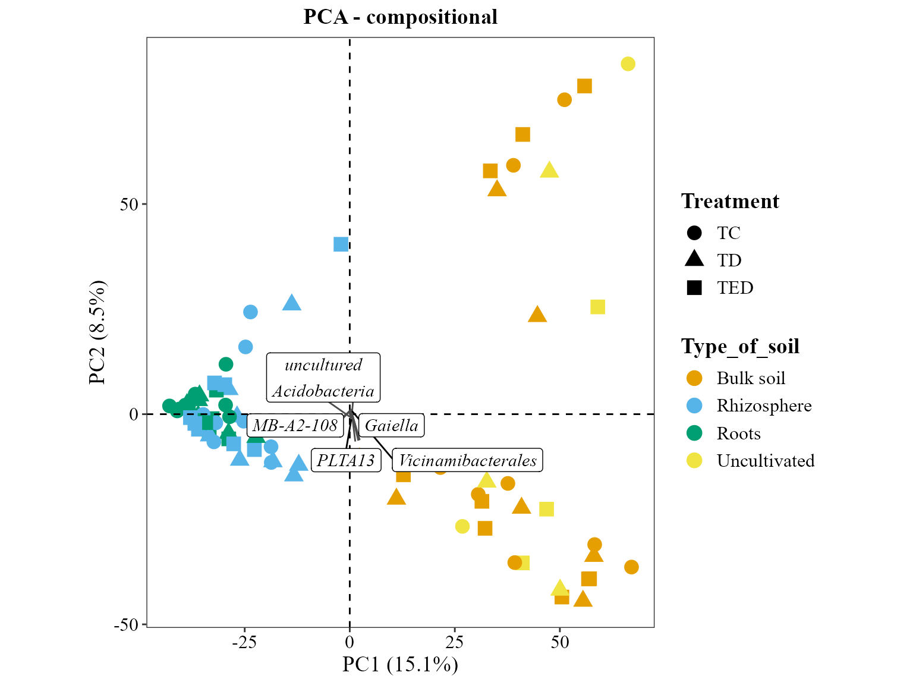
Para los hongos 🍄 usamos otra combinación: la disimilitud de
Bray-Curtis, que pondera los taxones por su abundancia,
con una ordenación NMDS. NMDS parte de configuraciones
al azar, así que aquí también se usa set.seed():
set.seed(123)
beta_ord_plot(table = table_fung,
metadata = metadata_fungi,
group_col = "Type_of_soil",
shape_col = "Treatment",
distance = "bray",
ordination = "NMDS")## Run 0 stress 0.1282494
## Run 1 stress 0.137064
## Run 2 stress 0.1268558
## ... New best solution
## ... Procrustes: rmse 0.01348788 max resid 0.06322113
## Run 3 stress 0.131974
## Run 4 stress 0.1284548
## Run 5 stress 0.165162
## Run 6 stress 0.1272512
## ... Procrustes: rmse 0.007298609 max resid 0.05473952
## Run 7 stress 0.1402745
## Run 8 stress 0.1268558
## ... Procrustes: rmse 3.561058e-06 max resid 1.719656e-05
## ... Similar to previous best
## Run 9 stress 0.1272512
## ... Procrustes: rmse 0.007300011 max resid 0.05475023
## Run 10 stress 0.1274534
## Run 11 stress 0.1315103
## Run 12 stress 0.1309372
## Run 13 stress 0.1301517
## Run 14 stress 0.1268558
## ... New best solution
## ... Procrustes: rmse 4.203426e-06 max resid 1.973148e-05
## ... Similar to previous best
## Run 15 stress 0.1272512
## ... Procrustes: rmse 0.007293077 max resid 0.05469673
## Run 16 stress 0.1574605
## Run 17 stress 0.1272512
## ... Procrustes: rmse 0.00729887 max resid 0.05473141
## Run 18 stress 0.1366118
## Run 19 stress 0.1272606
## ... Procrustes: rmse 0.02929663 max resid 0.1521837
## Run 20 stress 0.1361393
## *** Best solution repeated 1 times## Coordinate system already present.
## ℹ Adding new coordinate system, which will replace the existing one.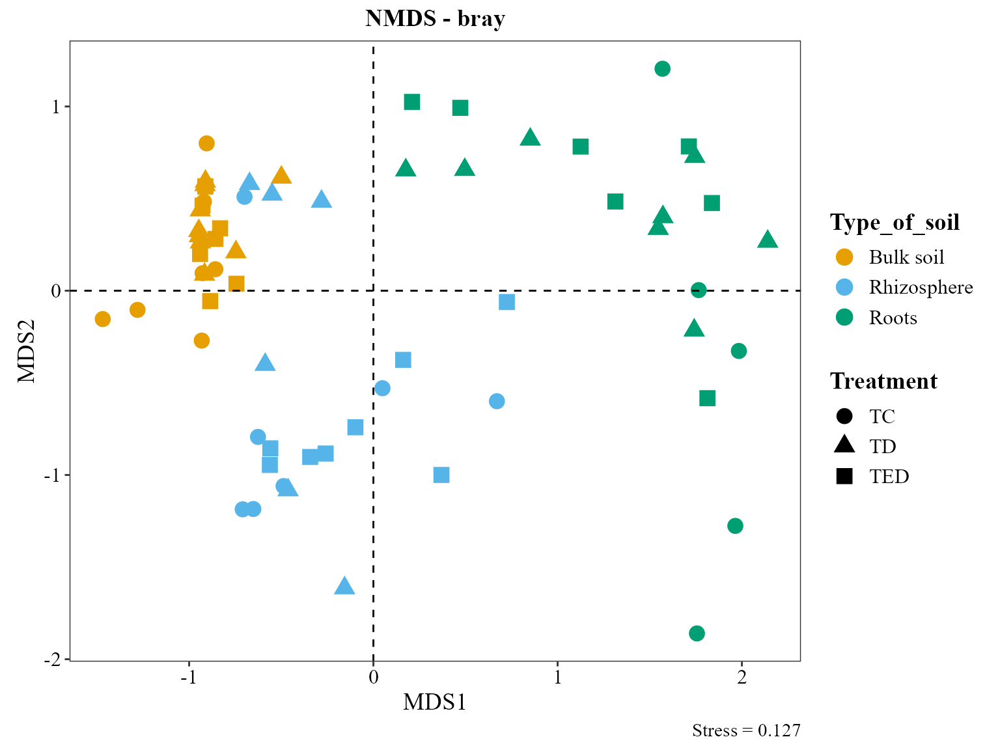
🖥️ Pruebas estadísticas para diversidad beta
La función beta_test_table() realiza pruebas
estadísticas para evaluar si la composición de la comunidad difiere
entre grupos experimentales.
El argumento formula_str especifica el diseño
experimental usando una sintaxis de fórmula similar a la de los modelos
lineales en R, o como se usa en el paquete vegan (Oksanen et al. 2024). El parámetro
distance define la métrica de distancia usada para calcular
las disimilitudes, y el argumento test especifica la prueba
estadística (opciones: PERMANOVA (Anderson
2001) o BETADISPER).
El parámetro permutations determina el número de
permutaciones usadas para estimar la significancia estadística.
strata_var se usa, como en el paquete vegan,
para bloquear un parámetro. La primera columna de metadata
debe tener los IDs de las muestras. Las funciones nunca emparejan las
muestras por posición: las filas de la metadata se emparejan con la
tabla por ID (y se reordenan si hace falta, con un mensaje), las
muestras que no están en la metadata se dejan fuera con un mensaje, y la
función se detiene si ningún ID coincide. Esto aplica a todas las
funciones que hacen una prueba estadística (PERMANOVA, betadisper,
ALDEx2, CCA/RDA, random forest). table también puede ser
una distancia ya calculada (por ejemplo, de
vegan::vegdist()), que se usa tal cual.
⚠️ NOTA: Cada función tiene la opción save_* que exporta una tabla o un elemento obtenido en cada función.
distance coincide con la ordenación de cada conjunto de
datos de arriba (compositional para bacterias,
bray para hongos), de modo que la prueba de significancia
evalúa la misma noción de disimilitud que se muestra en el gráfico.
set.seed(123)
beta_test_table(table = table_bac,
metadata= metadata_bacteria,
formula_str = "Type_of_soil*Treatment",
distance = "compositional",
mc_samples = 128,
test = "permanova",
permutations = 999)## no conditions provided: forcing denom = 'all'## no conditions provided: forcing conds = 'NA'## conditions vector supplied## operating in serial mode## computing center with all features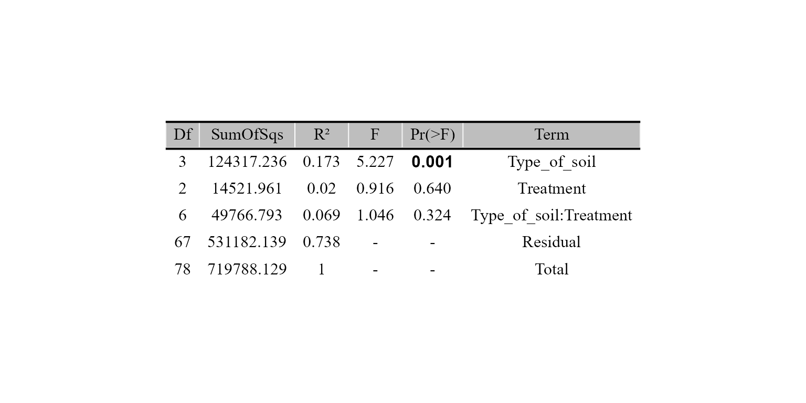
set.seed(123)
beta_test_table(table = table_fung,
metadata= metadata_fungi,
formula_str = "Type_of_soil*Treatment",
distance = "bray",
test = "permanova",
permutations = 999)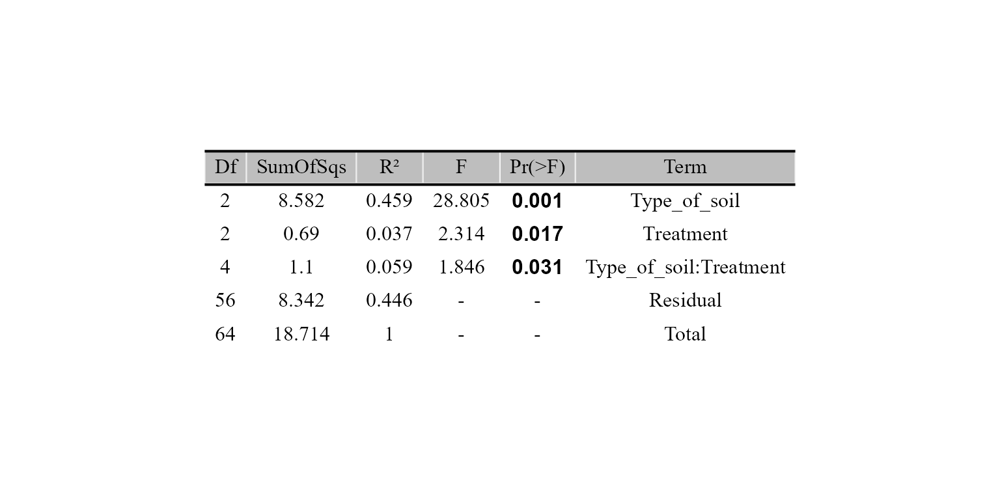
💻 Partición de la diversidad beta
La diversidad beta también puede descomponerse en distintos
componentes. La función beta_partition_ord_plot() divide la
diversidad beta en los componentes de recambio (turnover) y
anidamiento (nestedness) según índices de disimilitud
seleccionados (Baselga and Orme 2012).
El argumento family especifica la familia de índices de
disimilitud usada para la partición (por ejemplo, Jaccard o Sørensen).
Los parámetros group_col y shape_col definen
cómo se visualizan las muestras según variables de metadatos.
beta_partition_ord_plot(
table = table_bac,
metadata = metadata_bacteria,
family = "jaccard",
group_col = "Type_of_soil",
shape_col = "Treatment",
save_table = FALSE)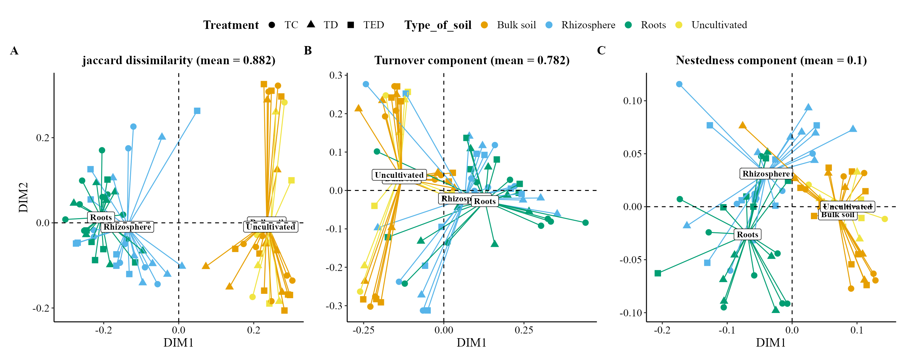
beta_partition_ord_plot(
table = table_fung,
metadata = metadata_fungi,
family = "jaccard",
group_col = "Type_of_soil",
shape_col = "Treatment",
save_table = FALSE)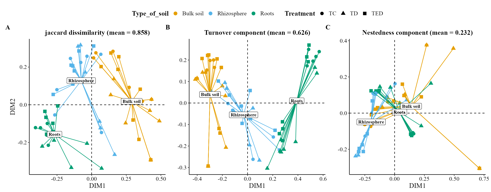
🖥️ Visualización pareada de diversidad beta
La función beta_dissimilarity_plot() resume los valores
pareados de diversidad beta usando boxplots, permitiendo comparar los
patrones de diversidad entre grupos de muestras. Esta función usa
betapart sobre datos de incidencia (presencia/ausencia),
con el índice de Sørensen o Jaccard: shared, turnover o nestedness.
Los parámetros condition1_col y
condition2_col especifican las variables de metadatos
usadas para definir los grupos que se comparan.
condition2_col separa las comparaciones en facetas: cada
faceta conserva solo pares de muestras con el mismo valor (por ejemplo,
las dos muestras del tratamiento TC), así que no se mezclan
tratamientos. El argumento partition determina qué
componente de la diversidad beta se muestra (por ejemplo, compartido o
exclusivo), mientras que family define el índice de
disimilitud usado.
Por defecto, beta_dissimilarity_plot() conserva todas
las combinaciones pareadas posibles de condition1_col,
incluyendo un grupo comparado consigo mismo (por ejemplo
"Roots_vs_Roots"). El argumento
comparison_condition1 restringe el gráfico a etiquetas
específicas "value1_vs_value2" (los dos valores ordenados
alfabéticamente y unidos con "*_vs_*"). Aquí construimos
esa lista programáticamente para conservar solo las comparaciones de
cada otro compartimento contra Roots, descartando las
autocomparaciones:
groups_bac <- setdiff(unique(as.character(metadata_bacteria$Type_of_soil)), "Roots")
vs_roots_bac <- paste0(pmin(groups_bac, "Roots"), "_vs_", pmax(groups_bac, "Roots"))
# each comparison takes the color of the group compared with Roots
vs_roots_colors <- c("Bulk soil_vs_Roots" = "#E69F00",
"Rhizosphere_vs_Roots" = "#56B4E9",
"Roots_vs_Uncultivated" = "#F0E442")
vs_roots_bac## [1] "Rhizosphere_vs_Roots" "Bulk soil_vs_Roots" "Roots_vs_Uncultivated"Igual que en los gráficos de diversidad alfa,
x_label_angle rota las etiquetas del eje x (por defecto
0), strip_text_bold activa/desactiva las
negritas de los títulos de faceta (por defecto FALSE), y
aspect_ratio fija la relación alto/ancho del panel. Igual
que en los gráficos alfa, stat (por ejemplo
"wilcox.test", "kruskal.test",
"anova") agrega una comparación estadística entre los
boxplots de cada faceta, por pares o global y con
p_adjust_method, igual que en los gráficos alfa.
Si save_table = TRUE, la función también retorna una
tabla con los valores de diversidad beta usados para generar el
gráfico.
beta_dissimilarity_plot(table = table_bac,
metadata = metadata_bacteria,
comparison_condition1 = vs_roots_bac,
group_colors = vs_roots_colors,
condition1_col = "Type_of_soil",
condition2_col = "Treatment",
x_axis_title = "Samples",
show_x_labels = FALSE,
stat = "kruskal.test",
partition = "shared",
family = "jaccard",
save_table = FALSE)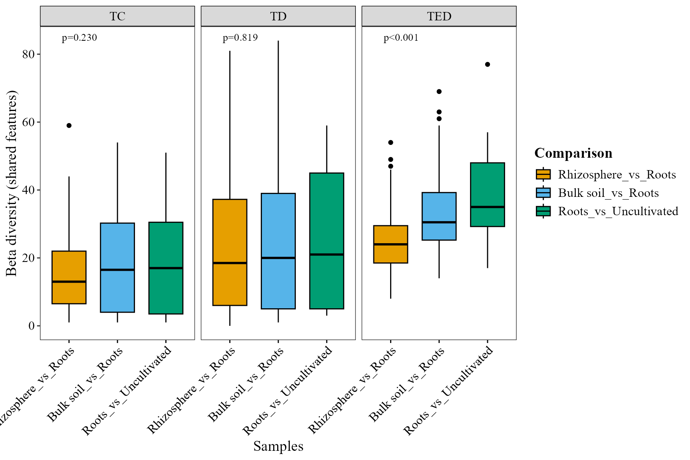
Para los hongos 🍄 vemos otro componente:
partition = "turnover" conserva solo el reemplazo de
taxones entre muestras (no las diferencias debidas a que una muestra
tenga un subconjunto de los taxones de la otra), aquí con la familia
Sørensen:
groups_fung <- setdiff(unique(as.character(metadata_fungi$Type_of_soil)), "Roots")
vs_roots_fung <- paste0(pmin(groups_fung, "Roots"), "_vs_", pmax(groups_fung, "Roots"))
beta_dissimilarity_plot(table = table_fung,
metadata = metadata_fungi,
comparison_condition1 = vs_roots_fung,
group_colors = vs_roots_colors,
condition1_col = "Type_of_soil",
condition2_col = "Treatment",
x_axis_title = "Samples",
show_x_labels = FALSE,
stat = "kruskal.test",
partition = "turnover",
family = "sorensen",
save_table = FALSE)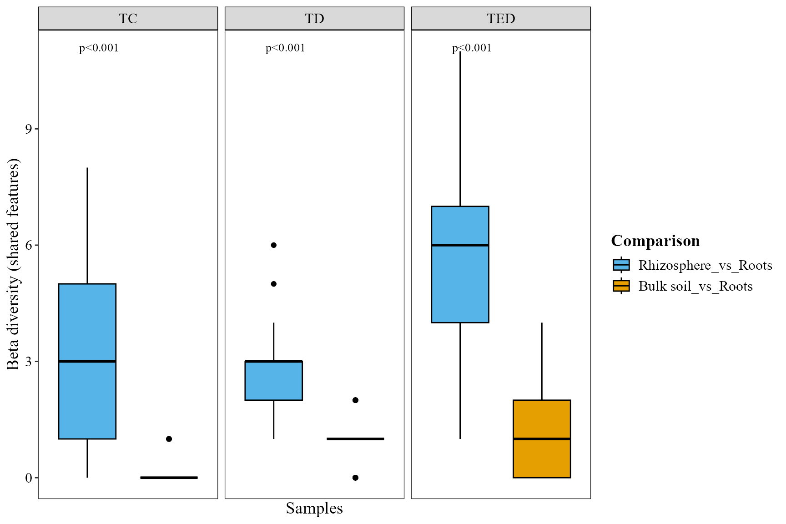
🖥️ Recambio pareado (turnover): entre grupos vs. dentro del grupo
beta_turnover_plot() reporta el componente de recambio
(ASV turnover) de la diversidad beta basada en números de Hill
(q=0, 1, 2), con una fila de faceta por orden de Hill.
beta_turnover_plot() responde una pregunta distinta a la
de beta_dissimilarity_plot(): para un grupo de
referencia (por ejemplo, Rhizosphere), ¿es su recambio
contra otro grupo (por ejemplo, Roots, una comparación
entre grupos) mayor que su recambio contra sí mismo
(pares Rhizosphere-vs-Rhizosphere, una línea base dentro del grupo)? Si
el recambio entre grupos es significativamente mayor, eso es evidencia
de que los dos compartimentos realmente albergan comunidades distintas,
más allá de la variabilidad ya presente entre réplicas del mismo
compartimento.
Así que el gráfico de abajo tiene una franja morada arriba (este
color se puede configurar) por cada tratamiento (TC,
TD, TED: solo se da
condition2_col, así que cada faceta conserva los pares de
muestras de ese mismo tratamiento) y, dentro de cada una, dos cajas:
“Rhizosphere_vs_Roots” (entre grupos) y
“Rhizosphere_vs_Rhizosphere” (la línea base dentro del
grupo). Los nombres en group_colors deben coincidir
exactamente con estas etiquetas de comparación; si no, las cajas salen
grises (la función avisa).
comparison_condition1 selecciona qué combinaciones
"valor1_vs_valor2" conservar, siempre con el grupo de
referencia (Rhizosphere) primero.
comparison_condition2 conserva solo los pares del mismo
tratamiento, para que el recambio no se confunda al comparar muestras de
tratamientos distintos. Si solo se da condition2_col (sin
comparison_condition2), se hace lo mismo para todos los
tratamientos: se conservan los pares del mismo tratamiento y se faceta
por tratamiento.
facet_colors colorea las franjas de faceta superiores
(una por par de comparison_condition2) y
group_colors colorea las cajas (una por par de
comparison_condition1). Las etiquetas del eje están ocultas
por defecto ya que los grupos ya están identificados en la leyenda.
Establece show_x_labels = TRUE para mostrarlas de nuevo.
stat agrega una comparación estadística entre las cajas de
cada faceta, como en beta_dissimilarity_plot().
beta_turnover_plot(
table = table_fungi,
metadata = metadata_fungi,
comparison_condition1 = c("Rhizosphere_vs_Roots", "Rhizosphere_vs_Rhizosphere"),
condition1_col = "Type_of_soil",
condition2_col = "Treatment",
facet_colors = "#5D478B",
group_colors = c("Rhizosphere_vs_Roots" = "#56B4E9",
"Rhizosphere_vs_Rhizosphere" = "grey75"),
stat = "wilcox.test"
)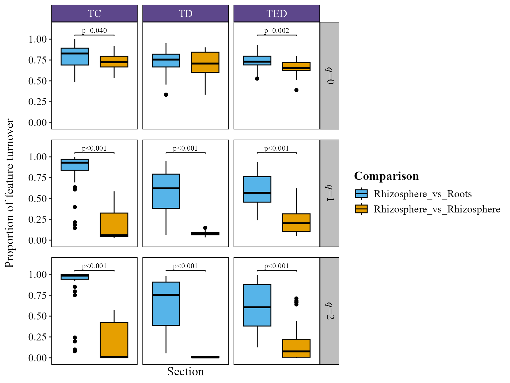
💻 Decaimiento de la similitud comunitaria con la distancia
La función beta_decay_plot() evalúa si las comunidades
geográficamente más cercanas también son más similares en composición.
Calcula la disimilitud comunitaria pareada (distance, por
ejemplo "jaccard", "bray",
"horn") y las distancias geográficas pareadas a partir de
las coordenadas de las muestras, corre una prueba de Mantel (Mantel 1967)
entre ambas, y grafica la similitud (1 − disimilitud) contra la
distancia con una línea de regresión ajustada.
lat_col/lon_col nombran las columnas de
latitud/longitud en metadata (en grados digits), y el
argumento opcional group_col corre una prueba de Mantel y
una línea de regresión separadas por grupo, en vez de una sola prueba
global.
Construimos datos de ejemplo para esta parte:
loc_coords <- data.frame(
Loc = 0:8,
lat = 19.0 + seq(0, 0.8, length.out = 9),
lon = -99.0 + seq(0, 0.8, length.out = 9)
)
metadata_bacteria$lat <- loc_coords$lat[match(metadata_bacteria$Loc, loc_coords$Loc)]
metadata_bacteria$lon <- loc_coords$lon[match(metadata_bacteria$Loc, loc_coords$Loc)]
#filtrando uncultivated
metadata_bacteria_decay <- metadata_bacteria %>%
filter(Type_of_soil != "Uncultivated")
beta_decay_plot(
table = table_bac,
metadata = metadata_bacteria_decay,
lat_col = "lat",
lon_col = "lon",
distance = "jaccard",
group_col = "Type_of_soil"
)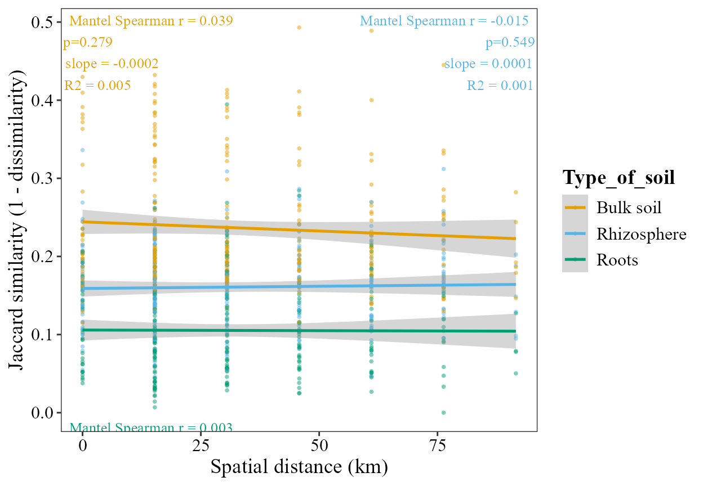
📊 Análisis de abundancia diferencial
MicroBioMeta tiene varias funciones para explorar
taxones diferencialmente abundantes. Estos análisis
ayudan a identificar features microbianos que varían significativamente
entre grupos experimentales.
Dos funciones se apoyan en un marco de análisis de datos composicionales implementado en el paquete ALDEx2 (Fernandes et al. 2014). Este enfoque tiene en cuenta la naturaleza composicional de los datos de secuenciación (Gloor et al. 2017) usando instancias de Monte Carlo Dirichlet y transformaciones log-razón centradas, y en el paquete ANCOMBC2 (Lin and Peddada 2020), un método alternativo de abundancia diferencial que modela explícitamente el sesgo composicional y los ceros estructurales.
Las funciones:
aldex_volcano_plot()visualiza los resultados de abundancia diferencial usando un volcano plot.aldex_heatmap_plot()visualiza los taxones significativos en un heatmap.ancombc_plot()retorna un gráfico de barras (cuando hay 2 grupos) y un heatmap (cuando hay 3 o más grupos).
Adicionalmente, dos enfoques complementarios ayudan a identificar taxones importantes que discriminan entre grupos:
ratios_bubble_plot()visualiza taxones basándose en diferencias log-razón entre condiciones.random_forest_lollipop_plot()usa un modelo Random Forest (Breiman 2001) para identificar los features que mejor predicen una variable o condición dada, visualizado como un gráfico de lollipop de importancia de features.
📊 Ejemplo: datos de bacterias
Primero, filtramos los metadatos para conservar solo dos compartimentos de suelo y aplicar ALDEx2.
metadata_bacteria_compar <- metadata_bacteria %>%
filter(Type_of_soil == "Roots" | Type_of_soil =="Rhizosphere")
table_bacteria_compar <- table_bacteria[match(metadata_bacteria_compar$SAMPLEID, colnames(table_bacteria))]
table_bac_compar <- merge_feature_taxonomy(table_bacteria_compar, taxonomy_bacteria)## Warning in merge_feature_taxonomy(table_bacteria_compar, taxonomy_bacteria): 83
## taxonomy IDs are not present in the table and will be excluded from the result.Podemos visualizar la abundancia diferencial usando un
volcano plot. Los taxones significativos se etiquetan
con su nombre; label_size controla el tamaño de fuente de
estas etiquetas, y filter_uncultured = TRUE descarta los
taxones “uncultured”/“unculture” de las etiquetas (aunque igual se
grafican como puntos, solo no se etiquetan). Por defecto la
significancia usa el valor p ajustado por Benjamini-Hochberg
(p_adjust_method = "BH"), porque se prueban miles de
taxones a la vez. En estos datos ningún taxón queda significativo tras
la corrección (todos los puntos grises); con
p_adjust_method = "none" se usa el valor p sin
corregir.
aldex_volcano_plot(table = table_bac_compar,
metadata = metadata_bacteria_compar,
group_col = "Type_of_soil",
type = "volcano",
label_size = 3,
filter_uncultured = TRUE )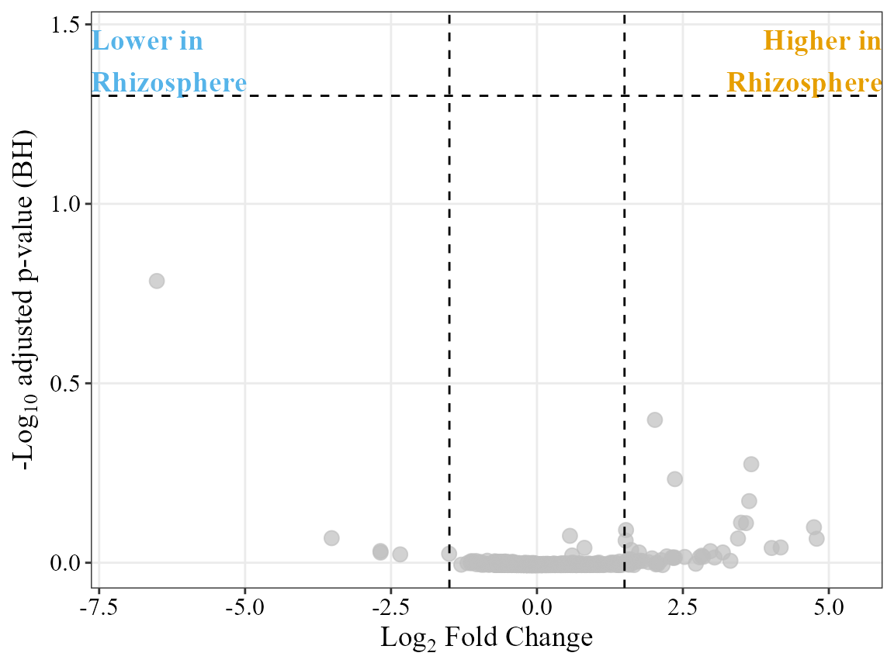
📊 ANCOMBC2 como método alternativo
ancombc_plot() ofrece una alternativa a las funciones
basadas en ALDEx2 de arriba. Esta función depende del paquete de
Bioconductor ANCOMBC:
# install.packages("BiocManager")
BiocManager::install("ANCOMBC")level agrupa la tabla a un rango taxonómico antes de la
prueba (por defecto "Genus"), y
p_adjust_method/min_prevalence controlan la
corrección por pruebas múltiples y el filtro de prevalencia.
⚠️ Con un min_prevalence bajo, los taxones raros o
dispersos pueden disparar un error
"Zero variances have been detected..." en el paso interno
de corrección de sesgo de ANCOMBC2 en algunas corridas (no siempre
ocurre, depende de qué taxones conserve la iteración de bootstrap en
turno). Subir min_prevalence filtra esos taxones dispersos
antes de la prueba y evita el error.
ancombc_plot(
table = table_bac_compar,
metadata = metadata_bacteria_compar,
group_col = "Type_of_soil",
level = "Genus",
min_prevalence = 0.3,
p_adjust_method = "BH"
)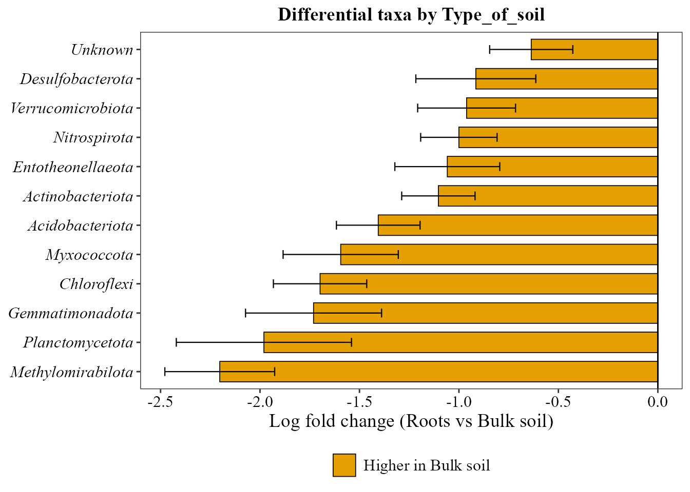
📊 Ejemplo: datos de hongos
Seguimos el mismo procedimiento, comparando Bulk
soil y Roots, pero visualizamos los resultados
con un heatmap. Esta función usa
ComplexHeatmap.
metadata_fungi_compar <- metadata_fungi %>%
filter(Type_of_soil == "Bulk soil" | Type_of_soil =="Roots")
table_fungi_compar <- table_fung[match(metadata_fungi_compar$SAMPLEID, colnames(table_fung))]
table_fung_compar <- merge_feature_taxonomy(table_fungi_compar, taxonomy_fungi)## Warning in merge_feature_taxonomy(table_fungi_compar, taxonomy_fungi): 17
## taxonomy IDs are not present in the table and will be excluded from the result.Como en el volcano plot, por defecto el heatmap conserva los taxones
con un valor p ajustado por Benjamini-Hochberg menor a 0.05
(pval_threshold = 0.05,
p_adjust_method = "BH"); effect_threshold
permite además filtrar por tamaño del efecto. Cada fila muestra los
valores clr medianos por grupo, con anotaciones laterales para el tamaño
del efecto, la clase de valor p y la diferencia entre grupos:
set.seed(123)
aldex_heatmap_plot(table = table_fung_compar,
metadata = metadata_fungi_compar,
group_col = "Type_of_soil")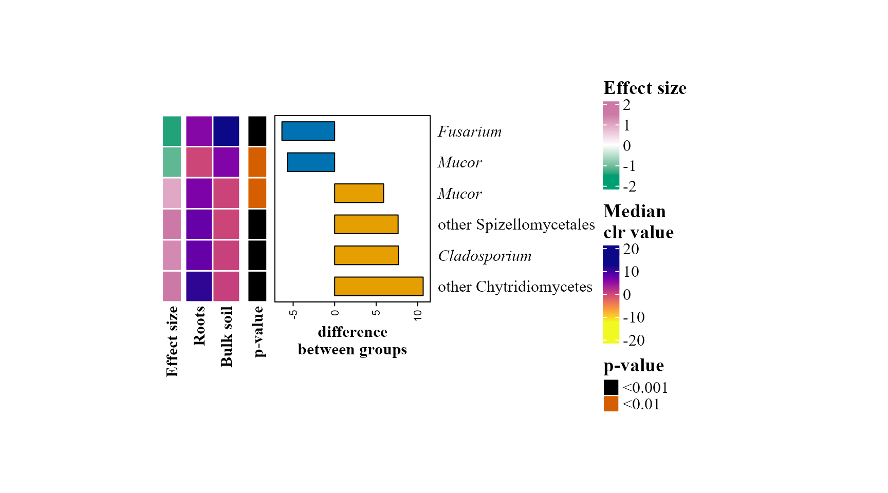
📊 Identificando taxones importantes
Las funciones random_forest_lollipop_plot() y
ratios_bubble_plot() también se pueden usar para resaltar
los taxones que más contribuyen a las diferencias observadas entre
condiciones.
Por ejemplo, un modelo Random Forest puede usarse para identificar los taxones que mejor predicen el compartimento de suelo:
random_forest_lollipop_plot(
table = table_bac,
metadata = metadata_bacteria,
top_n = 10,
variable_to_predict = "Type_of_soil")## Warning in random_forest_lollipop_plot(table = table_bac, metadata = metadata_bacteria, : Note: Some bacterial phylum names have been updated to match NCBI's revised taxonomy:
## - 'Proteobacteria' changed to 'Pseudomonadota'
## - 'Actinobacteriota' changed to 'Actinomycetota'
## Reference: https://ncbiinsights.ncbi.nlm.nih.gov/2021/12/10/ncbi-taxonomy-prokaryote-phyla-added/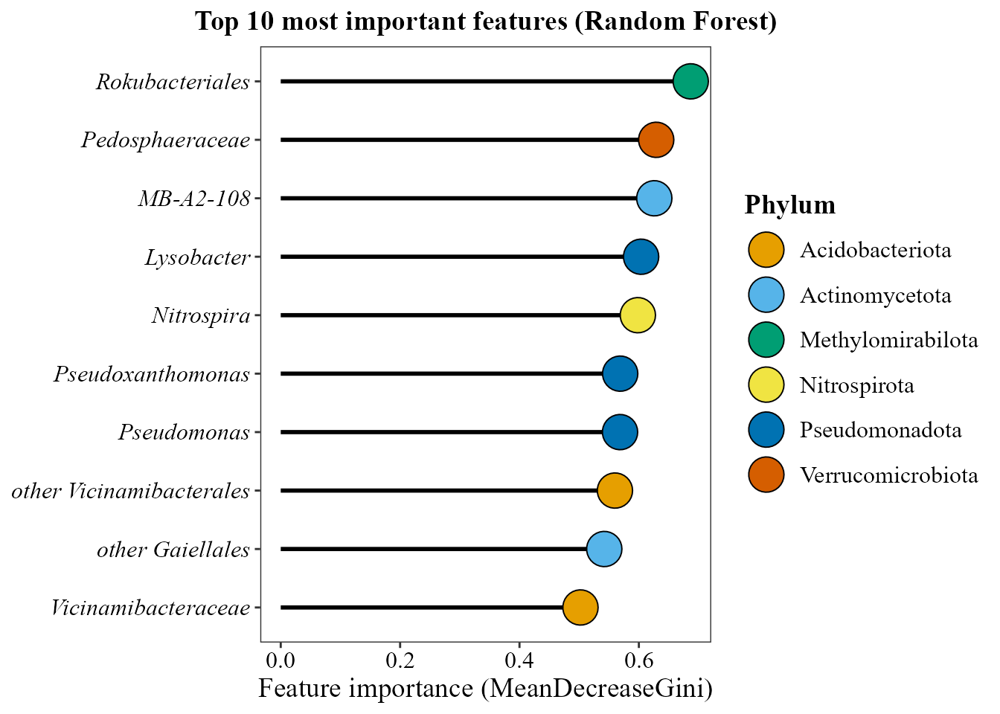
Alternativamente, los taxones con las diferencias log-razón más fuertes entre dos condiciones pueden visualizarse con:
ratios_bubble_plot(table = table_fung_compar,
metadata = metadata_fungi_compar,
group_col = "Type_of_soil",
top_n = 20,
condition_A = "Roots",
condition_B = "Bulk soil")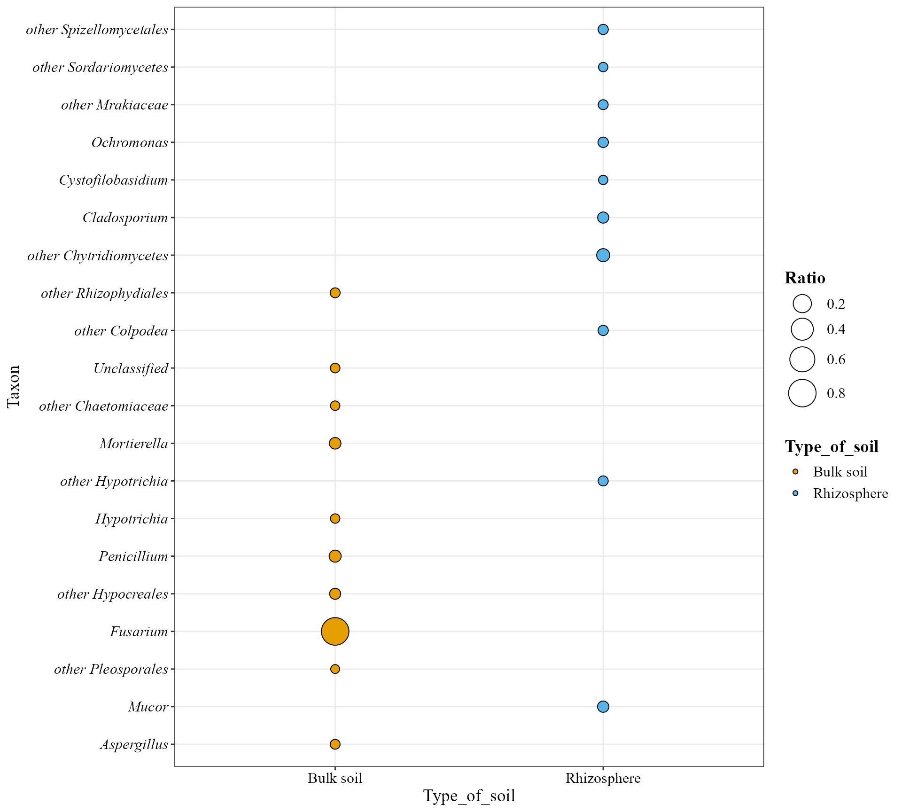
💻 Análisis ambientales
MicroBioMeta ofrece dos funciones para explorar la
relación entre variables ambientales y la
composición de la comunidad microbiana:
corr_env_abund_plot()— calcula correlaciones entre la abundancia taxonómica y variables ambientales.cca_rda_biplot()— realiza una ordenación restringida usando Análisis de Correspondencia Canónica (CCA) o Análisis de Redundancia (RDA).
🖥️ Preparando la tabla ambiental
Las variables ambientales deben organizarse en un data frame donde las filas corresponden a las muestras y las columnas a las variables ambientales.
env_table_fung <- metadata_fungi %>%
dplyr::select(SAMPLEID, pH:Arbus_per) %>%
remove_rownames() %>%
column_to_rownames(var = "SAMPLEID")🖥️ Correlación entre variables ambientales y abundancia taxonómica
La función corr_env_abund_plot() calcula correlaciones
entre variables ambientales y abundancias
relativas taxonómicas en un nivel taxonómico seleccionado, y
retorna un heatmap de correlación que muestra cómo se
relacionan las variables ambientales con las abundancias
taxonómicas.
Ejemplo usando abundancias a nivel de phylum:
corr_env_abund_plot(table = table_fung,
env_data = env_table_fung,
metadata = metadata_fungi,
level = "phylum",
save_table = FALSE)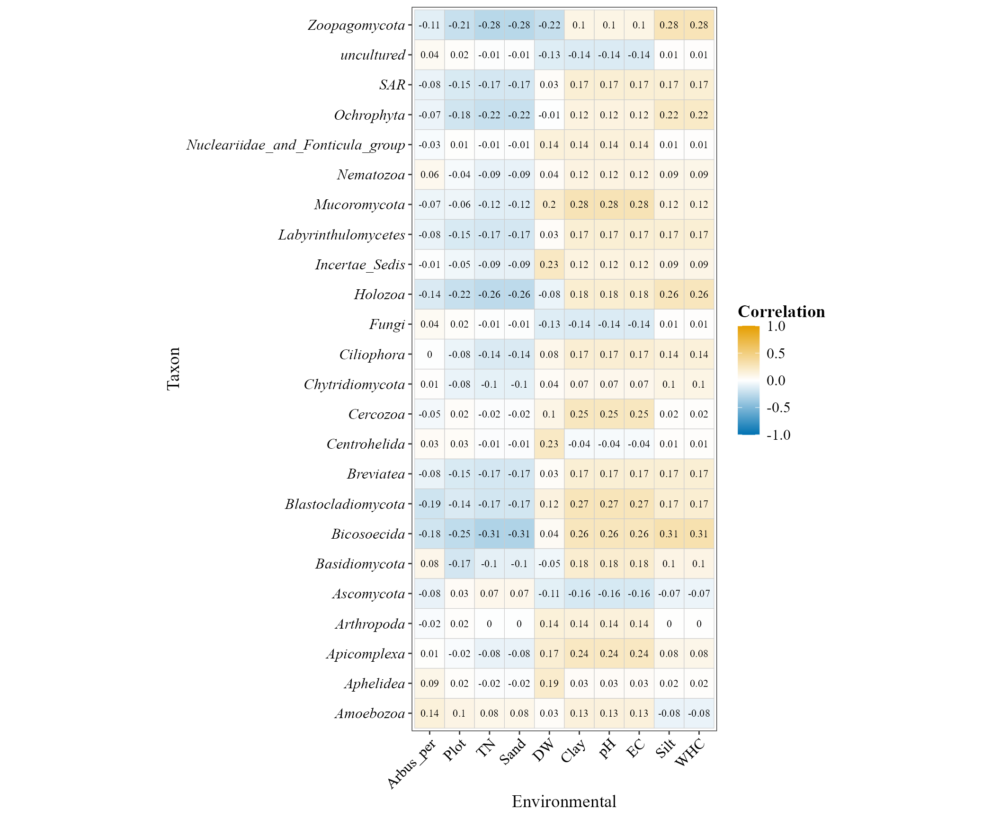
🖥️ Visualización alternativa
Las correlaciones también pueden mostrarse usando marcadores circulares en vez de celdas:
corr_env_abund_plot(table = table_fung,
env_data = env_table_fung,
metadata = metadata_fungi,
level = "phylum",
save_table = FALSE,
geom = "circle")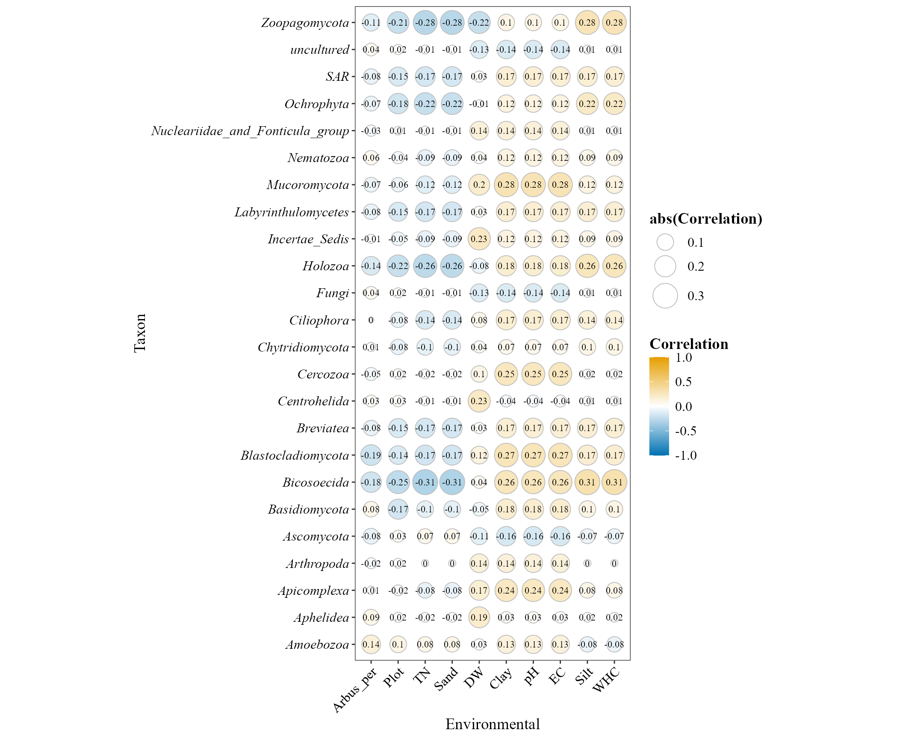
🖥️ Ordenación restringida (CCA / RDA)
La función cca_rda_biplot() realiza un análisis de
ordenación restringida para evaluar cómo las variables ambientales
explican la variación en la composición de la comunidad microbiana.
Antes de correr el análisis, asegúrate de que el orden de las muestras en la tabla ambiental coincida con el de los metadatos:
env_table_fung <- env_table_fung[
match(metadata_fungi$SAMPLEID, rownames(env_table_fung)), , drop = FALSE]scale_arrows es un parámetro que te ayuda a visualizar
mejor los vectores ambientales:
cca_rda_biplot(table = table_fung,
env_data = env_table_fung,
metadata = metadata_fungi,
env_vars = c("pH","TN","WHC", "EC", "Clay"),
analysis = "RDA",
show_all_env_vectors = TRUE,
group_col = "Type_of_soil",
scale_arrows = 3)##
## Some constraints or conditions were aliased because they were redundant. This
## can happen if terms are constant or linearly dependent (collinear): 'WHC',
## 'EC', 'Clay'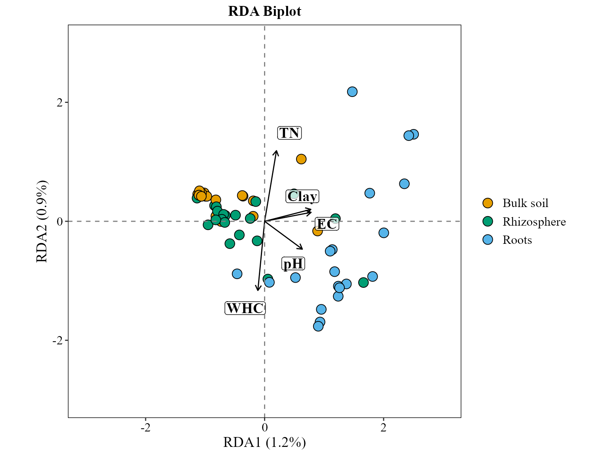
Este análisis produce un biplot donde:
Los puntos representan muestras
Los colores indican los grupos de muestras definidos en los metadatos.
Las flechas representan las variables ambientales y su dirección de influencia sobre la estructura de la comunidad.
Los vectores ambientales que apuntan en direcciones similares indican asociaciones positivas, mientras que los vectores que apuntan en direcciones opuestas sugieren relaciones negativas
Referencias
Información de la sesión
## R version 4.6.1 (2026-06-24 ucrt)
## Platform: x86_64-w64-mingw32/x64
## Running under: Windows 10 x64 (build 19045)
##
## Matrix products: default
## LAPACK version 3.12.1
##
## locale:
## [1] LC_COLLATE=Spanish_Latin America.utf8
## [2] LC_CTYPE=Spanish_Latin America.utf8
## [3] LC_MONETARY=Spanish_Latin America.utf8
## [4] LC_NUMERIC=C
## [5] LC_TIME=Spanish_Latin America.utf8
##
## time zone: America/Mexico_City
## tzcode source: internal
##
## attached base packages:
## [1] stats graphics grDevices utils datasets methods base
##
## other attached packages:
## [1] doRNG_1.8.6.3 rngtools_1.5.2 foreach_1.5.2
## [4] lubridate_1.9.5 forcats_1.0.1 stringr_1.6.0
## [7] dplyr_1.2.1 purrr_1.2.2 readr_2.2.0
## [10] tidyr_1.3.2 tibble_3.3.1 ggplot2_4.0.3
## [13] tidyverse_2.0.0 MicroBioMeta_0.99.0
##
## loaded via a namespace (and not attached):
## [1] fs_2.1.0 matrixStats_1.5.0
## [3] httr_1.4.9 betapart_1.6.1
## [5] RColorBrewer_1.1-3 doParallel_1.0.17
## [7] numDeriv_2016.8-1.1 tools_4.6.1
## [9] backports_1.5.1 R6_2.6.1
## [11] vegan_2.7-6 mgcv_1.9-4
## [13] GetoptLong_1.1.1 permute_0.9-10
## [15] withr_3.0.3 gridExtra_2.3.1
## [17] cli_3.6.6 Biobase_2.72.0
## [19] textshaping_1.0.5 Cairo_1.7-0
## [21] sandwich_3.1-3 labeling_0.4.3
## [23] sass_0.4.10 mvtnorm_1.4-2
## [25] S7_0.2.2 randomForest_4.7-1.2
## [27] proxy_0.4-29 pkgdown_2.2.1
## [29] systemfonts_1.3.2 foreign_0.8-91
## [31] dichromat_2.0-1 itertools_0.1-3
## [33] readxl_1.5.0.1 rstudioapi_0.19.0
## [35] generics_0.1.4 ggVennDiagram_1.5.7
## [37] shape_1.4.6.1 gtools_3.9.5
## [39] car_3.1-5 Matrix_1.7-5
## [41] interp_1.1-6 DescTools_0.99.60
## [43] S4Vectors_0.50.3 abind_1.4-8
## [45] lifecycle_1.0.5 multcomp_1.4-32
## [47] yaml_2.3.12 carData_3.0-6
## [49] SummarizedExperiment_1.42.0 SparseArray_1.12.2
## [51] grid_4.6.1 crayon_1.5.3
## [53] lattice_0.22-9 haven_2.5.5
## [55] cowplot_1.2.0 magick_2.9.1
## [57] pillar_1.11.1 knitr_1.52
## [59] ComplexHeatmap_2.28.0 rcdd_1.6-1
## [61] GenomicRanges_1.64.0 rjson_0.2.23
## [63] boot_1.3-32 gld_2.6.8
## [65] codetools_0.2-20 fastmatch_1.1-8
## [67] picante_1.8.4 glue_1.8.1
## [69] ggvenn_0.1.19 data.table_1.18.6.1
## [71] vctrs_0.7.3 png_0.1-9
## [73] Rdpack_2.6.6 cellranger_1.1.0
## [75] gtable_0.3.6 cachem_1.1.0
## [77] zigg_0.0.2 xfun_0.61
## [79] rbibutils_2.4.1 S4Arrays_1.12.0
## [81] Rfast_2.1.5.2 Seqinfo_1.2.0
## [83] reformulas_0.4.4 survival_3.8-6
## [85] hillR_0.5.2 geometry_0.5.2
## [87] iterators_1.0.14 TH.data_1.1-5
## [89] directlabels_2026.8.27 nlme_3.1-169
## [91] ANCOMBC_2.14.0 data.tree_1.2.0
## [93] bslib_0.12.0 otel_0.2.0
## [95] rpart_4.1.27 colorspace_2.1-3
## [97] BiocGenerics_0.58.1 Hmisc_5.3-0
## [99] nnet_7.3-20 NADA_1.6-1.2
## [101] Exact_3.3 tidyselect_1.2.1
## [103] compiler_4.6.1 htmlTable_2.5.0
## [105] expm_1.0-1 desc_1.4.3
## [107] DelayedArray_0.38.2 checkmate_2.3.4
## [109] scales_1.4.0 quadprog_1.5-8
## [111] digest_0.6.39 minqa_1.2.8
## [113] rmarkdown_2.32 XVector_0.52.0
## [115] htmltools_0.5.9 pkgconfig_2.0.3
## [117] jpeg_0.1-11 base64enc_0.1-6
## [119] lme4_2.0-6 MatrixGenerics_1.24.0
## [121] fastmap_1.2.0 rlang_1.3.0
## [123] GlobalOptions_0.1.4 htmlwidgets_1.6.4
## [125] zCompositions_1.6.2 ggh4x_0.3.1
## [127] farver_2.1.2 jquerylib_0.1.4
## [129] zoo_1.9-1 jsonlite_2.0.0
## [131] energy_1.7-12 BiocParallel_1.46.0
## [133] magrittr_2.0.5 Formula_1.2-6
## [135] patchwork_1.3.2 geosphere_1.6-8
## [137] Rcpp_1.1.2 ape_5.8-1
## [139] viridis_0.6.5 stringi_1.8.9
## [141] rootSolve_1.8.2.4 MASS_7.3-65
## [143] plyr_1.8.9 parallel_4.6.1
## [145] ggrepel_0.9.8 doSNOW_1.0.20
## [147] lmom_3.3 deldir_2.0-4
## [149] splines_4.6.1 multtest_2.68.0
## [151] hms_1.1.4 circlize_0.4.18
## [153] ALDEx2_1.44.0 igraph_2.3.3
## [155] ggpubr_1.0.0 ggsignif_0.6.4
## [157] reshape2_1.4.5 stats4_4.6.1
## [159] magic_1.6-1 evaluate_1.0.5
## [161] latticeExtra_0.6-31 RcppParallel_6.2.1
## [163] nloptr_2.2.1 tzdb_0.5.0
## [165] networkD3_0.4.1 clue_0.3-68
## [167] broom_1.0.13 e1071_1.7-17
## [169] rstatix_1.1.0 viridisLite_0.4.3
## [171] class_7.3-23 ragg_1.5.2
## [173] gsl_2.1-9 truncnorm_1.0-9
## [175] snow_0.4-4 minpack.lm_1.2-4
## [177] lmerTest_3.2-1 IRanges_2.46.0
## [179] cluster_2.1.8.2 timechange_0.4.0